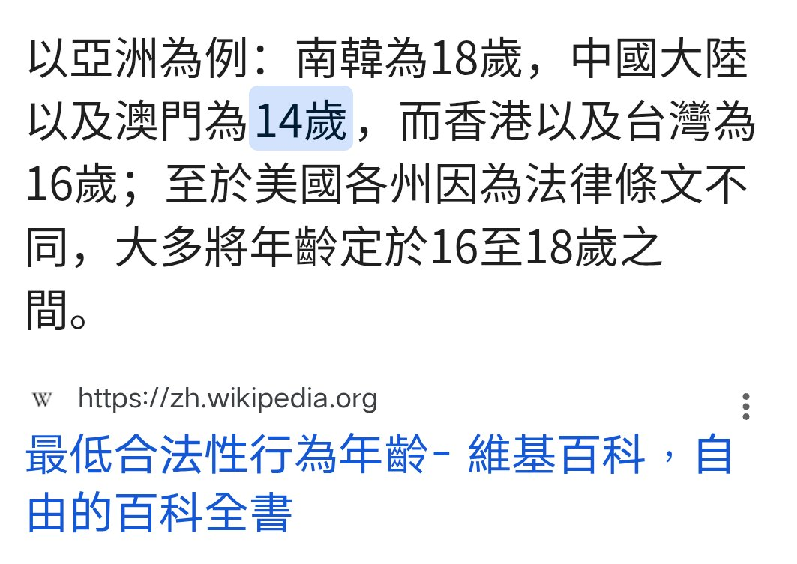
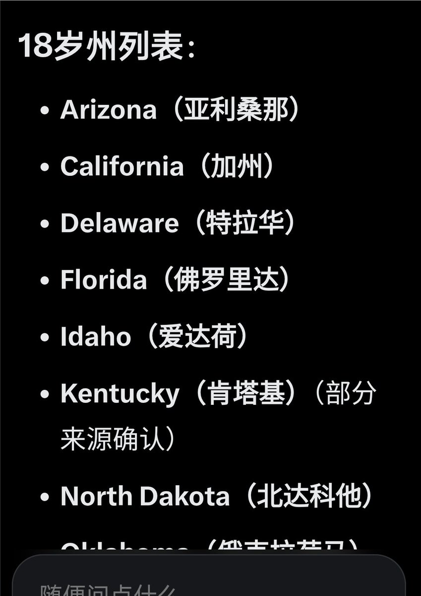

索瑟尔 𝓢𝓸𝓻𝓬𝓮𝓻𝓮𝓻🍥🏳️⚧️
@Sorcerer1311
@Woliketouzhele 另外中国性同意年龄和强奸罪是挂钩的，而强奸罪的受害者只能是法律意义的女性
这意味着以目前中国这种对未达性同意年龄性关系定义为强奸的法律框架下，性同意年龄的提高意味着更多与未成年女性发生性关系的行为都会被认定为强奸
这种法治倒退的行为还有人洗啊


豹国师
@Woliketouzhele
@Sorcerer1311 发达国家中性同意年龄没有低于14的。在中国港澳台内地的规定也不同，就算是美国，也并不是所有州都一样。18岁周如截图所示。
前面都说是脏话了，后面又说文明🤣理工生？能不能讲点逻辑呢 https://t.co/1YCuhJmhq5